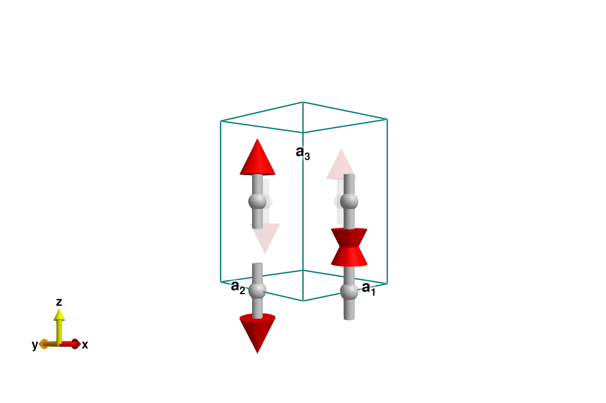
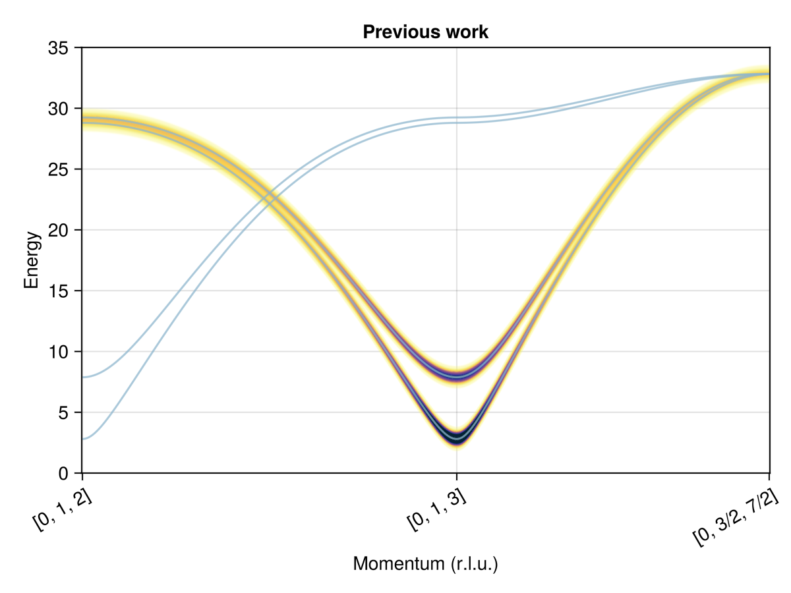
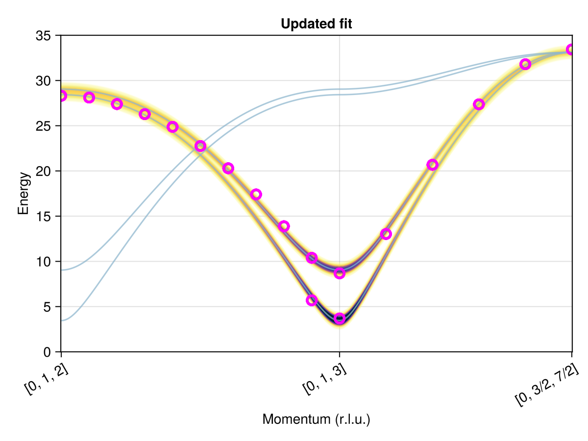

Download this example as Julia file or Jupyter notebook.
SW35 - LuVO₃ fitting
This is a Sunny adaption of SpinW Tutorial 35. It fits a model to the dispersion curves of LuVO₃ in its undistorted Néel ordered phase, with data from Skoulatos et al., Phys. Rev. B 91, 161104(R) (2015).
Construct the Crystal using the custom ITA setting "P b n m" for spacegroup 62. The V³⁺ ions live on Wyckoff 4b.
using Sunny, GLMakie, LinearAlgebra
a, b, c = 5.2821, 5.6144, 7.5283
latvecs = lattice_vectors(a, b, c, 90, 90, 90)
positions = [[1/2, 0, 0]]
cryst = Crystal(latvecs, positions, "P b n m")Crystal
Spacegroup 'P b n m' (62)
Lattice params a=5.282, b=5.614, c=7.528, α=90°, β=90°, γ=90°
Cell volume 223.3
Wyckoff 4b (site sym. '-1'):
1. [1/2, 0, 0]
2. [0, 1/2, 0]
3. [1/2, 0, 1/2]
4. [0, 1/2, 1/2]
Construct the System with mode :dipole_uncorrected to avoid renormalization of the single-ion anisotropy. This is less quantum-mechanically accurate, but facilitates numerical comparison with previously fitted values.
sys = System(cryst, [1 => Moment(s=1, g=2)], :dipole_uncorrected)System [Dipole mode, large-s]
Supercell (1×1×1)×4
Energy per site 0
Exchanges $J_{ab}$ and $J_{c}$ are in the x̂-ŷ plane and the ẑ direction, respectively. The single-ion anisotropy term has the assumed form $- \sum_α K_{αα} S_α^2$. Note that a shift of all $K_{xx}, K_{yy}, K_{zz}$ by some $c$ amounts to a physically irrelevant shift $- c |S|^2$ of the spin Hamiltonian. Therefore, without loss of generality, one can select $K_{zz} = 0$. With this convention, negative $K_{xx}$ and $K_{yy}$ amount to an easy-axis anisotropy in $ẑ$.
set_exchange!(sys, 1.0, Bond(1, 2, (0, 0, 0)), :Jab => 0)
set_exchange!(sys, 1.0, Bond(1, 3, (0, 0, 0)), :Jc => 0)
set_onsite_coupling!(sys, S -> -S[1]^2, 1, :Kxx => 0)
set_onsite_coupling!(sys, S -> -S[2]^2, 1, :Kyy => 0)Parameters for Phase III are reported in Table I of Skoulatos et al. Here, it seems the paper has a typo. The spin wave spectrum matches only after swapping their reported parameters $J_{ab}$ and $J_{c}$.
labels = [:Jab, :Jc, :Kxx, :Kyy]
skoulatos_fit = [5.95, 4.24, -0.48, -0.06] # Typo fixed
set_params!(sys, labels, skoulatos_fit)Energy minimization yields the expected (π, π, π) Néel order with easy axis along ẑ.
minimize_energy!(sys)
plot_spins(sys; ghost_radius=4)
Magnon bands are consistent with Skoulatos et al.
Q1 = [0, 1.0, 2.0]
Q2 = [0, 1.0, 3.0]
Q3 = [0, 1.5, 3.5]
path = q_space_path(cryst, [Q1, Q2, Q3], 500)
swt = SpinWaveTheory(sys; measure=ssf_perp(sys))
res = intensities_bands(swt, path)
plot_intensities(res; ylims=(0, 35), title="Previous work")
This tutorial refits model parameters using the labeled peaks in Fig. 1d of Skoulatos et al. WebPlotDigitizer is a convenient way to extract this data.
qs = [
[0.0, 1.0, 2.0], [0.0, 1.0, 2.1], [0.0, 1.0, 2.2], [0.0, 1.0, 2.3],
[0.0, 1.0, 2.4], [0.0, 1.0, 2.5], [0.0, 1.0, 2.6], [0.0, 1.0, 2.7],
[0.0, 1.0, 2.8], [0.0, 1.0, 2.9], [0.0, 1.0, 3.0], [0.0, 1.1, 3.1],
[0.0, 1.2, 3.2], [0.0, 1.3, 3.3], [0.0, 1.4, 3.4], [0.0, 1.5, 3.5]
]
Es = [
[28.311], [28.111], [27.395], [26.279], [24.876], [22.758], [20.296],
[17.405], [13.884], [5.697, 10.391], [3.693, 8.674], [13.027], [20.683],
[27.368], [31.798], [33.431]
]Use make_loss_fn to define an optimization target loss. Because the system is already initialized to the correct Néel magnetic order, we opt not to call minimize_energy! prior to the SpinWaveTheory calculation. Internally, squared_error_bands assigns each labeled peak in Es to the closest spin wave mode in res (as a one-to-one mapping).
loss = make_loss_fn(sys, labels) do sys
# minimize_energy!(sys) # Uncomment if the spin state should vary with params
swt = SpinWaveTheory(sys; measure=ssf_perp(sys))
res = intensities_bands(swt, qs)
squared_error_bands(Es, res)
endFittingLoss([:Jab, :Jc, :Kxx, :Kyy])
Guess some arbitrary parameters that are consistent with the assumed Néel order. This requires positive $J_{ab}$, $J_c$ and negative $K_{xx}$, $K_{yy}$. Evaluate the loss. A number much less than 1 would be expected for a good fit.
guess = [3, 3, -0.2, -0.1] # Guess for [Jab, Jc, Kxx, Kyy]
loss(guess)0.14124068797674524The Optim package provides a variety of powerful optimization methods. For example, it supports particle swarm as was used by the original SpinW tutorial. For our purposes, however, the simpler Nelder-Mead method is sufficient. Here, one should avoid gradient-based optimization methods, such as LBFGS, due to the possibility of discontinuous jumps in the peak-to-mode assignments of squared_error_bands.
import Optim
method = Optim.NelderMead()
options = Optim.Options(; g_tol=1e-8)
fit = Optim.optimize(loss, guess, method, options)
fit.minimizer # [Jab, Jc, Kxx, Kyy]4-element Vector{Float64}:
6.1039993498571805
3.988900372381501
-0.6289891048318235
-0.0903859599115392Report misfit tolerances derived from uncertainty_matrix. This is a pragmatic choice if the measured data has high precision relative to systematic modeling errors.
U = uncertainty_matrix(loss, fit.minimizer)
sqrt.(diag(U) / 2) # [ΔJab, ΔJc, ΔKxx, ΔKyy]4-element Vector{Float64}:
0.21202376270123557
0.19237169953914357
0.08119094850825946
0.04247232831123731The parameter fits are in reasonable agreement with previous work:
| Parameter | This study (meV) | Skoulatos et al. (meV) |
|---|---|---|
| $J_{ab}$ | 6.10 ± 0.21 | 5.95 |
| $J_c$ | 3.99 ± 0.19 | 4.24 |
| $K_{xx}$ | -0.63 ± 0.08 | -0.48 |
| $K_{yy}$ | -0.09 ± 0.04 | -0.06 |
Finally, plot the fitted spectrum in the context of the experimentally measured peaks. The helper function find_qs_along_path maps $𝐪$-points to indices. The latter can be used as $x$-coordinates within the plot_intensities scene.
set_params!(sys, labels, fit.minimizer)
swt = SpinWaveTheory(sys; measure=ssf_perp(sys))
res = intensities_bands(swt, path)
fig = plot_intensities(res; ylims=(0, 35), title="Updated fit")
qinds = find_qs_along_path(qs, path)
data_pairs = [(q, Eq) for (q, Eqs) in zip(qinds, Es) for Eq in Eqs]
plot!(fig[1, 1], data_pairs; color=:transparent, strokecolor=:magenta, strokewidth=3)
fig